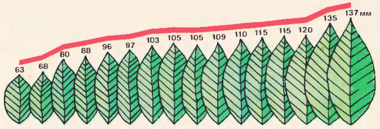
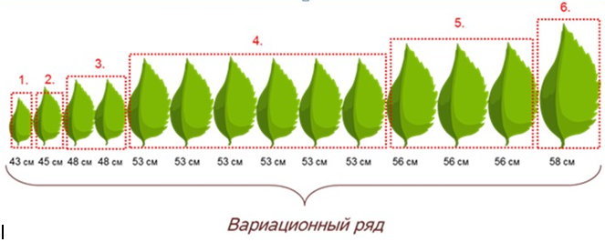
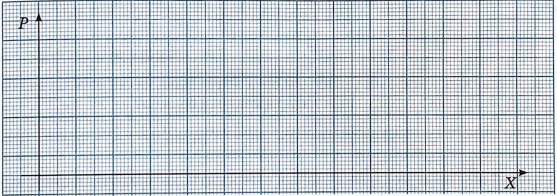
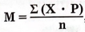
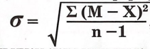

Ағаштың бір бұтағынан алынған жапырақтар
№5 зертханалық жұмыс
«Вариациялық қатар мен қисыққа құрылған модификациялық өзгергіштікті зерттеу»
Мақсаты: тұқымқуалайтын және тұқымқуаламайтын өзгергіштікті анықтау . Вариация қатарын құрып үйрену.
Құралдар
Лавршие жапырағы (ең кем дегенде 100 дана).
Лавршие жапырағын алдын ала үйден өлшеп келеді,алынған нәтижелерді дәптерге жазады.
Жұмыс барысы:
- 1. Модификациялық өзгергіштік-
- 2. Қолда бар өсімдіктің жапырағын өлшеңдер; оларды өсу ретімен дәптерге жазыңдар (№1 – ең ұсақтары, №25- ең ірілері). Түрлі нұсқадан тұратын вариациялық қатар шығады, мысалы :  2-сурет. Вариациялық қатар
3. Өсу реті бойынша берілген шамаларды кестеге толтырыңдар.
|
Жапырақ нөмірі |
1 |
2 |
3 |
4 |
... |
25 |
|
Өлшемі, см |
|
|
|
|
|
|
4. Әртүрлі нұсқалардың кездесу жиілігін анықтаңдар. Жоғары қатарға азынан көбіне қарай сандарды қойыңдар, төменгі қатарға әр нұсқаның кездесу жиілігін жазыңдар, мысалы:
 3-сурет. Вариациялық қатар|
Х Жапырақтардың немесе басқа заттардың ұзындығы (нұсқа мәні) |
|
|
|
|
|
|
|
|
|
Р Жапырақтардың немесе басқа заттардың саны (бірдей нұсқалардың кездесу жиілігі) |
|
|
|
|
|
|
|
|
5. Жапырақ тақтасы ұзындығының өзгергіштік белгілерінің вариациялық қисығын құрыңдар. Ол үшін абцисса осіне бір бірінен бірдей қашықтықта жапырақ ұзындығының өлшемін өсу реті бойынша орналастырыңдар, ал ордината осіне нұсқалардың кездесу жиілігін салыңдар. Алынған нүктелерді түзу сызықпен қосыңдар.
6. Негізгі статистикалық көрсеткіштердң анықтаңдар:
а) формула бойынша жапырақ тақтасы ұзындығының орташа мәнін есептеңдер:
- м-ұзындықтың орташа мәні;
- р-нұсқалардың кездесу жиілігі;
- n-қатардағы нұсқалардың жалпы саны;
- Х-нұсқа мәні;
- ∑-жиынтық.
Ә)орташа квадраттық ауытқуды – формула бойынша есептеңдер:
- ∑(М-Х)2-квадраттық ауытқу жиынтығы;
- n-нұсқалардың жалпы саны;
- (М-Х)2-орташа арифметикалық шамадан квадраттық ауытқу айырмасы.
- 7. Қорытынды жасаңдар.
- Модификациялық өзгергіштіктің заңдылықтары қандай:
- А)ағзаның фенотипі қандай факторлардан қалыптасады?
- Ә) біздің зерттеулерде вариациялық қатардың қандай нұсқалары жиірек кездесті?
- Б)вариациялық қатардың ұзындығы орта жағдайына қалай тәуелді болады?
- В)қандай жағдайда модификациялық өзгергіштік кең көлемде көрініс береді?
Ағзалардың өзгергіштігін ашу. Мақсаты: студенттерді модификациялық өзгергіштік және оның түрлерімен таныстыру статистикалық заңдылықтар, вариациялық қатарды, вариациялық қисық сызығын құру және сипаттаманың орташа мәнін табу қабілетін дамыту Прогресс. • картада ұсынылған тапсырмаларды орындаңыз Нәтижелерді ұсыну: • алынған мәліметтерді кестеге енгізу • сипаттаманың орташа мәнін есептеңіз: Σ (vp) M = ------------, n мұндағы М – сипаттаманың орташа мәні n – опциялардың жалпы саны • вариация қисығын сызу Соны қорытындылаңыз модификациялық өзгергіштіктің қандай үлгісін таптыңыз? Карточкадағы тапсырмалар: Тапсырма 1. 3-сыныпта оқушылардың бойын өлшедік, мәні (см-мен) болды келесі 110, 115, 112, 115, 114, 112, 113, 110, 113, 115, 112, 110, 115, 112, 110. Вариациялық қатар құру, вариациялық қисық сызу, сипаттаманың орташа мәнін табу. Тапсырма 2. 3-сынып оқушыларының массасын анықтады, мәні (см) Нәтижелері төмендегідей 25, 27, 24, 30, 26, 25, 26, 25, 24, 30, 24, 24, 26, 26, 27. Вариациялық қатар құру, вариациялық қисық сызу, сипаттаманың орташа мәнін табу
Дескриптор
|
|
Өлшемдер жүргізіп, вариациялық қатар құрады. |
|
|
Түрлі нұсқалардың кездесу жиілігін анықтап,кестені толтырады. |
|
|
Вариациялық қисық сызығын дұрыс құрады. |
|
|
Негізгі статистикалық көрсеткіштерді анықтайды. |
|
|
Зерттелетін заттардың реакция нормасын дұрыс анықтайды. |
|
|
Модификациялық өзгергіштік заңдылықтары туралы қорытынды жасайды |